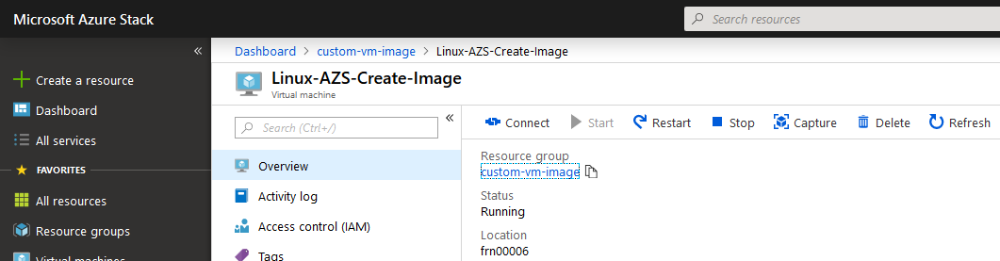
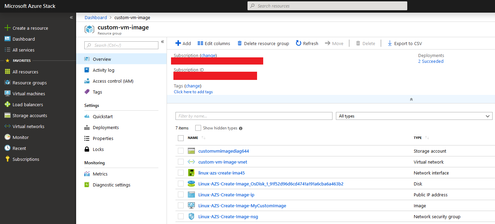

How to create a custom image from a VM on Azure Stack Hub using the UKCloud Azure Stack Hub portal
Overview
You can create an image resource from a generalised virtual machine (VM) that is stored as either a managed disk or an unmanaged disk in a storage account. You can then use the image to create multiple VMs.
This article explains how to create a custom image from a VM on Azure Stack Hub, which you can then use to deploy other VMs.
Prerequisites
To complete the steps in this article, you must have appropriate access to a subscription in the Azure Stack Hub portal.
Generalise your VM
Warning
Once you've generalised a VM, you cannot log back into it.
Log in to your Windows VM using Remote Desktop Protocol (RDP).
Open a PowerShell console or command prompt as administrator and run the following command:
C:\Windows\System32\Sysprep\sysprep.exeIn the System Preparation Tool, from the System Cleanup Action list, select Enter System Out-of-Box Experience (OOBE).
Ensure the Generalise check box is selected.
From the Shutdown Options list, select Shutdown.
See the image below for an example:

Click OK and wait for the VM to shutdown. Your RDP session will be closed.
Tip
The generalisation process is complete once your VM is in a stopped state.
Creating the image
Warning
Capturing a VM image will make the VM unusable and cannot be undone.
Log in to the Azure Stack Hub portal.
For more detailed instructions, see Getting Started Guide for UKCloud for Microsoft Azure.
In the favourites panel, select Virtual machines.
In the Virtual machines blade, select the VM that you want to capture.
In the top menu, click Capture.

In the Create image blade, provide a Name for the new image.
From the Resource group list, select an existing resource group, or create a new one by clicking the Create new link and then typing a name for your new resource group in the pop out window.
Select Automatically delete this virtual machine after creating the image.
In the Type the virtual machine name field, enter the VM name.
Click Create.

Wait for the image creation process to finish.
Once complete, your VM image will appear in the resource group you selected in step 6.

Click the VM image.
In the new page, click Create VM.

Enter a Name, Username, Authentication type, Password and Resource group for the new VM, then click OK.
Select a VM size then click Select.
In Configure optional features, under Select public inbound ports, select the ports you want to open.
Click OK.
Review the Summary blade and click OK. The new VM will now begin deployment.

Feedback
If you find a problem with this article, click Improve this Doc to make the change yourself or raise an issue in GitHub. If you have an idea for how we could improve any of our services, send an email to feedback@ukcloud.com.